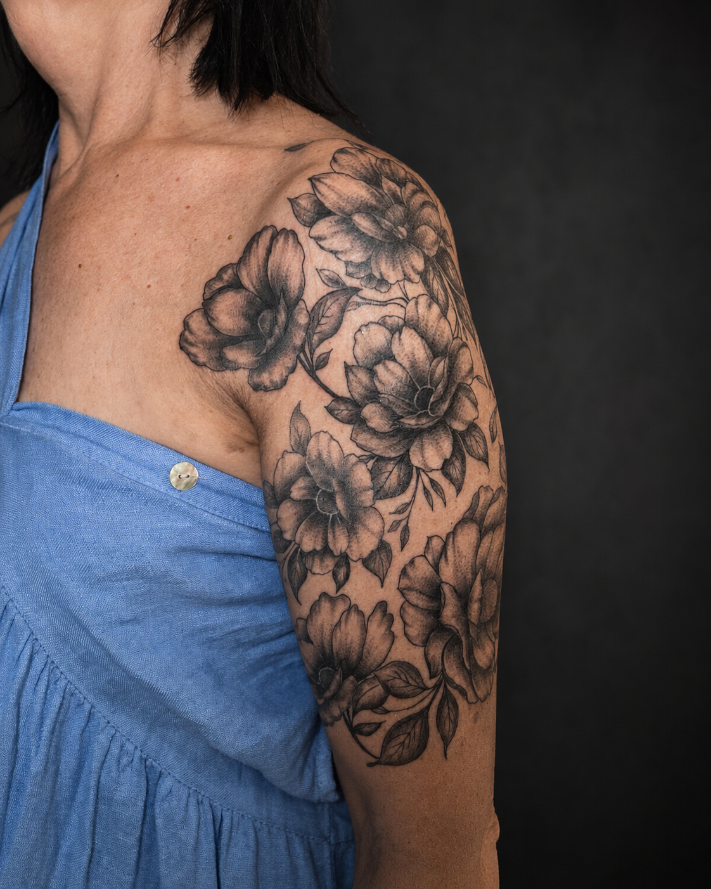
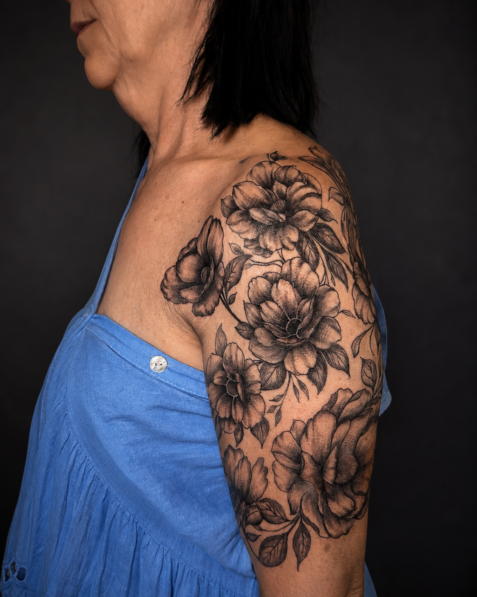
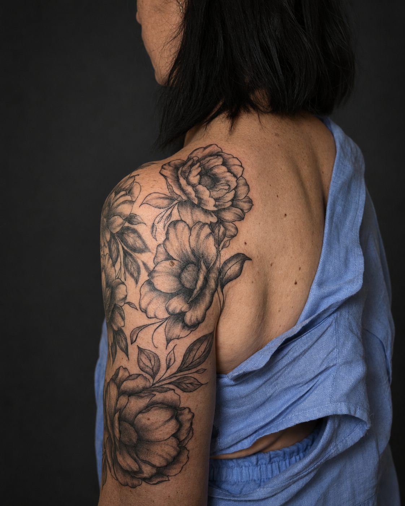

Porfolio / Proyecto floral
Proyecto floral de media manga inspirado en peonias.

La pieza comenzó siendo de tres flores, pero la clienta quiso posteriormente volver a completarse la media manga.

La composición de la pieza se hizo pensando en que hayan elementos grandes, de tal forma que desde cualquier angulo puedas ver flores completas.

Agujas 7RL y 9RMC. Maquina: Cheyeene Sol Nova Unlimited II 4.0.